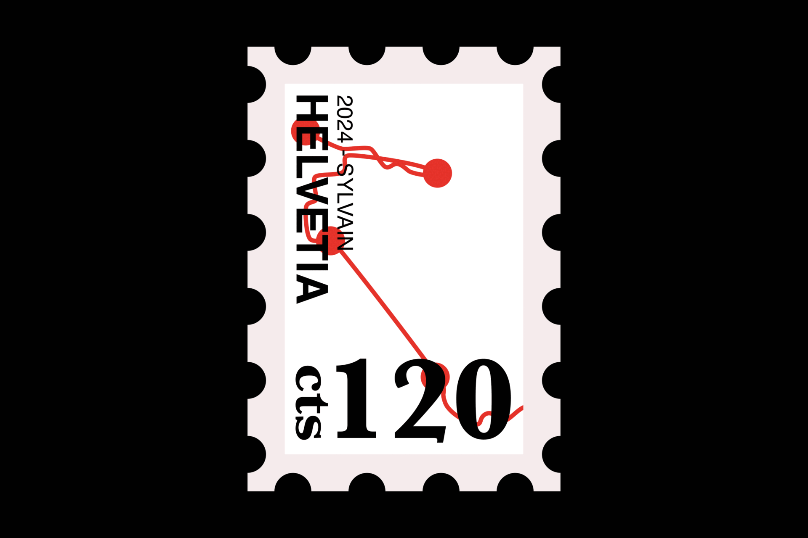
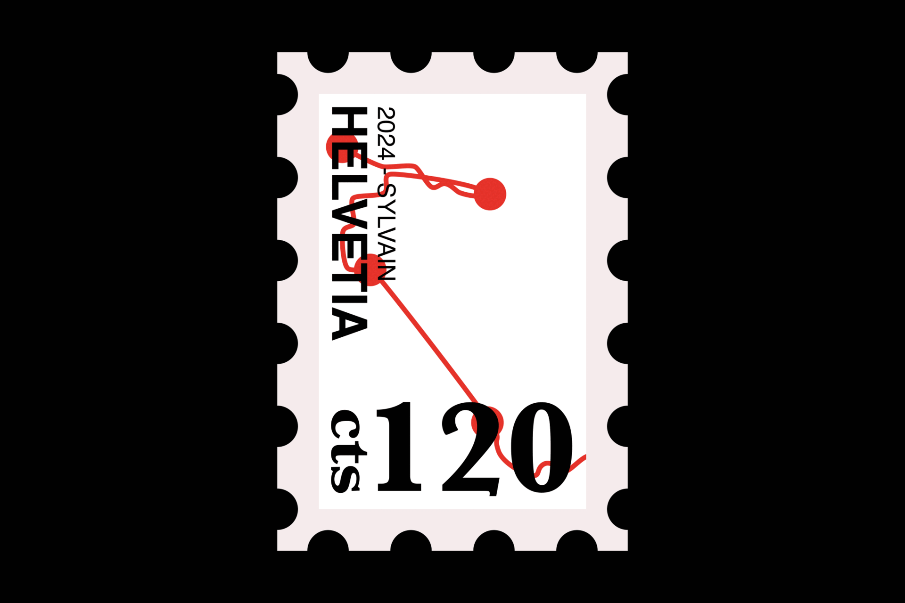

SHERLOCK HOLMES STAMPS
This project is a series of 6 stamps commemorating the 130th anniversary of the famous detective Sherlock Holmes “death” in Switzerland, at the Reichenbach Falls in Meiringen. Instead of making a clear representation of the character, I decided to create a visual that invites the reader to become the “next Sherlock Holmes” by finding the clues given by the key visual elements. The design of the stamps focuses on the final journey of Sherlock Holmes, including the different stopovers before he reached his destination at Meiringen. By positioning the stamps in the right order and aligning them on a map, we can see all the different cities and countries he travelled through (in order: Victoria, Canterbury, Newhaven, Dieppe, Brussels, Strasbourg, Valley of the Rhône, Gemmi Pass (Leukerbad), Interlaken and finally Meiringen (Reichenbach Fall).
Stamps
TOOLS:
Layout, Typography
DATE:
15.02.22
OBJECT:
Commemorative stamps series, CFPA
LOCATION:
Geneva, Switzerland

 
